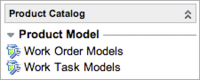
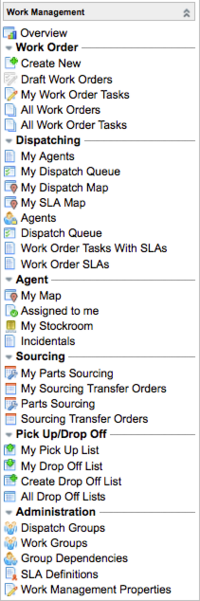

Work Management - Versions Prior to Fuji
| |
Note: References to Work Management indicate that the information on this page is valid for ServiceNow versions prior to Fuji. In the Fuji release, Work Management was renamed Field Service Management. |
Contents
1 Overview
The Work Management application helps organizations manage work tasks of any kind that need to be performed on location. Work management matches tasks to agent skills, geographic territory assignments, and available inventory. Agents then do the work and track their travel and work time. For example, a centralized IT department may select IT agents based on skills and territories, then send them out to remote offices to fix computers, install servers, and perform printer maintenance.
2 Work Management Process
Work Management provides functionality for streamlining the way tasks are qualified and dispatched and how parts are sourced. Additional automated features enable dispatchers to route and dispatch tasks quickly, using precise geolocation to create schedules. These features are explained where they occur in the following flow:
- Create qualification, dispatch, and assignment groups. These groups are sets of users or agents, filtered by location, who can perform specific work management tasks.
- Establish service level agreement (SLAs).
- Activate work management geolocation. Geolocation allows dispatchers to track agents with greater accuracy. Only users with the admin role can activate the Work Management Geolocation plugin.
- Create and qualify work orders. Qualifying a work order is the process of checking that work order information is complete so work order tasks can be assigned.
- Organize work into tasks that need to be done to complete the work order.
- Source parts and dispatch work order tasks to agents based on criteria such as skills and location.
- Have an agent or multiple agents execute the work order tasks assigned to them and track completion.
- Access and perform Work Management tasks from a mobile device. Agents can accept and reject tasks, track travel and work time, and access all the information they need about the work to be performed and assets to pick up.
3 General Roles
For detailed descriptions of each role, see User Roles.
- Administrators: The wm_admin role enables users to manage all data related to work management.
- Initiators: The wm_initiator role enables the initiator to create work orders and assign qualification groups.
- Qualifiers: The wm_qualifier role enables a qualifier to qualify work orders and create work order tasks.
- Dispatchers: The wm_dispatcher role enables a dispatcher to schedule tasks, add parts, and assign tasks to work agents.
- Agents: The wm_agent role enables field agents to manage actual task time and perform all work on site.
4 Menus and Modules
Activating the work management feature adds the Work Management application menu to the application navigator and adds modules to the Product Catalog application menu (starting with the Eureka release). If you are using an older version, see the previous version information.
|  | Under the Product Catalog menu:
|
|  | Under the Work Management menu:
|
{kind=link}
{kind=link}
| |
Note: Activating work management also adds the Personal Stockrooms module to the Inventory Management application menu. |
4.1 Menus and Modules Prior to the Eureka Release
| Click the plus (+) to expand information for versions prior to the Eureka release | ||||
|---|---|---|---|---|
|
Activating the work management feature adds the Work Management application menu to the application navigator with the following modules:
|
5 Activating Work Management
An administrator can activate the Work Management and Work Management Geolocation plugins. Work Management Geolocation is an optional plugin that enables the Work Management application to use Google Maps travel times when auto-assigning work order tasks. Activating the Work Management Geolocation plugin automatically activates the Work Management plugin.
For a list of dependent plugins that Work Management activates, see Plugin Dependencies.
| Click the plus to expand instructions for activating a plugin. |
|---|
|
If you have the admin role, use the following steps to activate the plugin.
|
6 Enhancements
6.1 Eureka
- Work management modules are reorganized in the application navigator.
- Dispatchers can configure task windows that define a block of time in which a task must be performed. Task windows can be flexible or fixed and are incorporated into scheduling for automatic routing and dispatch features. The task for a flexible window can be performed outside the window's time boundaries to accommodate an agent's schedule, but work for a fixed task window must be done within the defined window.
- Dispatchers can assign tasks automatically by using an optional plugin called Work Management Geolocation. This plugin provides additional properties, based on Google maps travel times, that ServiceNow uses to dispatch tasks more precisely. Auto-dispatch considers an agent's location, schedule, and skill set when dispatching tasks. Tasks dispatched using this method move from Pending Dispatch to Assigned automatically, without agent involvement.
- A dispatch map enables dispatchers to view tasks and agents in a familiar Google map and to assign or reassign tasks based on an agent's skills, location, and availability. Agents use a similar task map to manage their routes each day and take unassigned tasks that they have time to perform. An optional auto-routing feature enables dispatchers and agents to calculate daily routes more accurately, based on several variables, including travel time between tasks, task windows, and task durations. Agent positions on the map can be updated regularly by geolocation, a feature which tracks agents precisely through their mobile devices.
- You can customize the transition from one state to another in work orders and tasks using state flow records. State flows allow you to add or modify transitions, control who can edit the State field, and edit the contents of state choice lists. You can define properties for individual fields that are enforced when a record transitions between states and trigger system events on state changes.
- Agents can record incidental expenses for work order tasks, such as car rentals and mileage costs.
- If a transfer order has the same source and destination stockroom:
- If it is a personal stockroom, the related transfer order line automatically moves from the Draft stage to Delivered and the related asset state and substate becomes In stock - Reserved.
- If it is not a personal stockroom, the related transfer order line automatically moves from the Draft stage to Received and the related asset state and substate becomes In stock - Pending transfer.
- Improvements to the smartphone interface enable agents to view a task map and dispatchers to view a dispatch map and dispatch queue.
- Two modules provide lists of work orders and tasks that have SLAs associated with them. Drill into the specifics of the SLAs in the work order list or view tasks involving SLAs that might be behind schedule.
- A work management administrator can configure the work order process flow for automatic qualification. No qualification group is required for work orders configured in this manner.
- The My Work Order Tasks module is available to users with the wm_initiator_qualifier role when work order qualification is automatic. This module displays tasks created by the current user that are in the Draft state.
- Two additional users roles, wm_initiator_qualifier and wm_initiator_qualifier_dispatcher, are added that combine capabilities.
- The Work Management plugin adds three model classes to the ServiceNow Product Catalog application menu that a work management administrator can use as templates to create work orders, work order tasks, and part requirements automatically.
- A new part sourcing user interface enables users with the wm_qualifier role to source parts from stockrooms, see agent stockroom availability, and assign agents to work order tasks at the same time.
6.2 Dublin
- Only users with the wm_admin or admin role can customize the Work Management Overview page.
- An improvement to the visual dispatch drag and drop functionality makes it easier to unassign work order tasks.